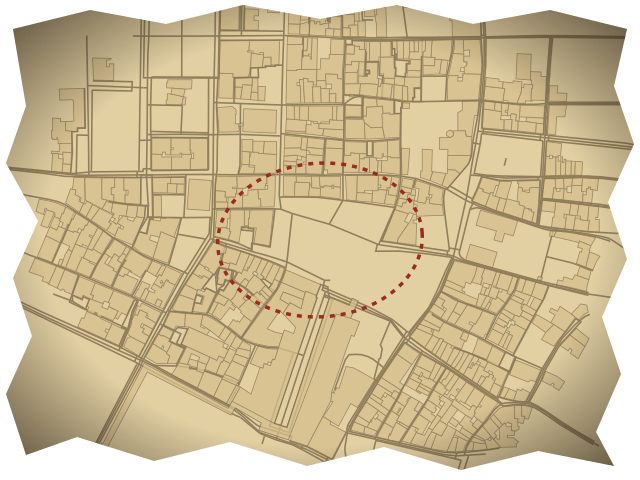

Duomo · Piazza della Signoria · Ponte Vecchio
Los rivales de Florencia
De una cúpula construida sin andamios a una puerta bautizada por Miguel Ángel, del David que es solo una copia a un puente que cambió de oficio por decreto ducal.
Un adelanto
“El Ponte Vecchio estuvo lleno de carnicerías durante siglos, hasta que en 1593 un gran duque, harto del olor, las cambió por otro oficio que sigue hoy en casi todas sus tiendas. ¿Cuál?”
Así son los enigmas. El resto se desbloquea al empezar a jugar.
La zona de juego

- Acceso a la ruta completa durante 1 año desde la compra
- Sistema de pistas si os quedáis atascados
- Versión imprimible por si preferís ir sin móvil
- Sin necesidad de cobertura una vez cargada la ruta